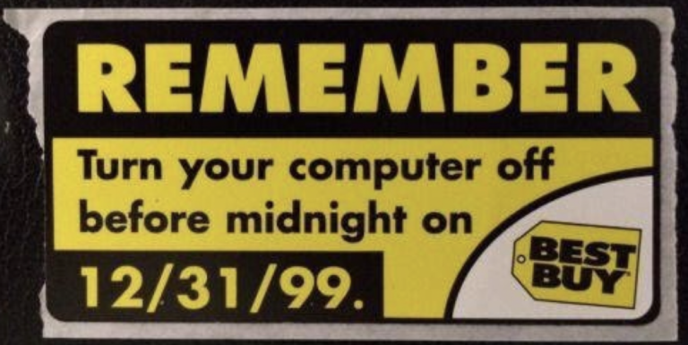
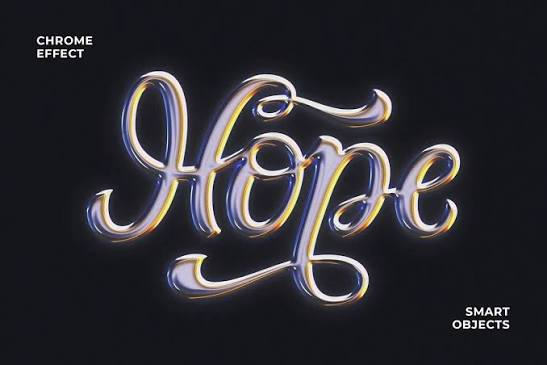
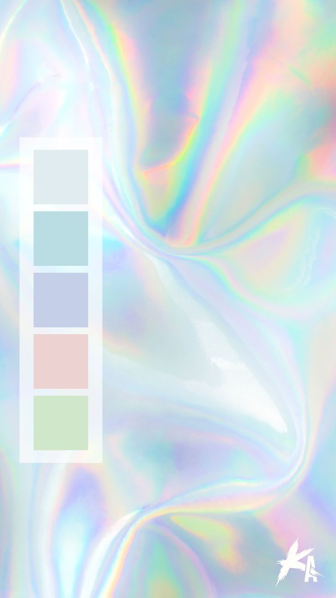
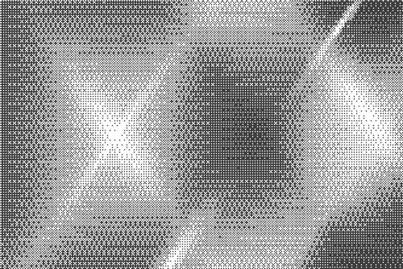
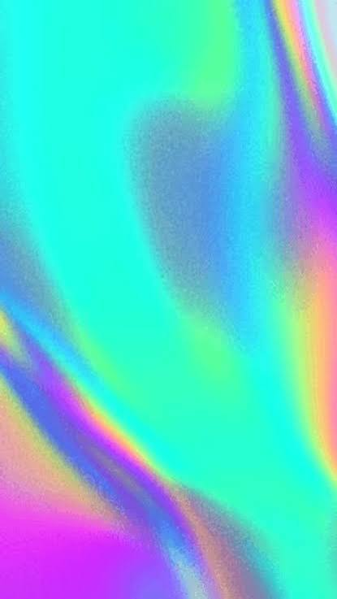
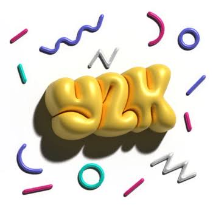

A Little History
Y2K - AKA Year 2000, started in the 90s when computers only had a 2 digit spot for the year. The thought was that when the year switched to 2000, systems would crash and the entire computer grid would fail! While this is where Y2K got its name, it turned into a style of images and type.

What makes up the Y2K aesthetic?

CHROME
Chrome encapsuled more than just the hyper-polished, reflective treatment to the type. It also involved flowy, bubbly letterforms that created a perfect base for the chrome reflection.

Colors
The colors used in Y2K type and styling are often a blend between pastel and neon, using colors that help create seamless, dreamlike gradients.

Pixel and Bitmap
Pixel and Bitmap started as the norm, because early computers and monitors used low resolution, blocky, jagged, and pixely letterforms were used to create the letters and shapes needed. This turned into more of a stylistic choice as computer resolution became stronger.

Seamless Gradient
Seamless gradients are used often in Y2K styling, and go hand in hand with color. Using the neon-pastel mix to create a seamless color gradient.

3D Effects
3D effects make up a lot of Y2K type design, and often goes hand in hand with Chrome! Creating a 3D effect on the text and making it bubbly and reflective all contribute to the 3D elements.
What Works
Having a fun, exciting, shiny new thing to look at will always catch someones eye. Even though it didn't necessarily age well, Y2K type represented a time where people yearned for fun, ecclectic styling and exciting movement in their daily lives. From the 3D elements of fonts to the chrome that made them really pop, the fun and wild designs of Y2K type drew people in and made them want more.
What Doesn't
While Y2K type and style are unique and fun, they unfortunately don't work for long term branding. Peoples preferences and tastes change, and It was not easy to make the high energy Y2K aesthetic scaleable. The chaotic nature of the colors and design also did not work for brands long term. Some people even think the bubbly and funky shape of certain letterforms was immature and cheap, and didn't read well for brands. It also didn't work well in coorprate america, as adding a fun, bubbly, chrome type to your business spreadsheets or financials doesn't read well to bosses or potential clients.

First example
Example info

Second example
Example info
Third example
Example info